終極北美大環線
「這是一段橫跨美加兩國、縱貫落磯山脈並延伸至太平洋西北海岸的壯闊史詩。由南往北前行，將壯麗的冰河與高山湖泊推向旅途的高潮。」
丹佛 ➔ 黃石：
地熱奇觀與雲端公路
D1: 抵達丹佛 ➔ 洛磯山脈門戶
取車並適應高海拔 (1,609m「一英里城市」)，走訪 Union Station 與 16 街商場，享用科羅拉多特色晚餐。入住 Estes Park 方向以利隔日早起入園。
RMNP：翡翠色湖泊群
🥾 Bear Lake ➔ Nymph ➔ Dream ➔ Emerald Lake (5.6km 來回｜爬升 +220m｜難度：易) 從 Bear Lake Trailhead 出發，串連三座寶石般的高山湖泊。
RMNP：天空之池挑戰
🥾 Sky Pond（14.5km 來回｜爬升 +520m｜難度：中-難）
RMNP 最具代表性的進階路線。途經 Alberta Falls 瀑布、穿越 Loch Vale 湖谷、攀爬 Timberline Falls 旁的濕滑岩壁，最終抵達藏在冰斗中的天空之池 —
四面環繞的刀鋒山脊倒映在如鏡湖面。建議清晨 06:00 前出發搶車位。
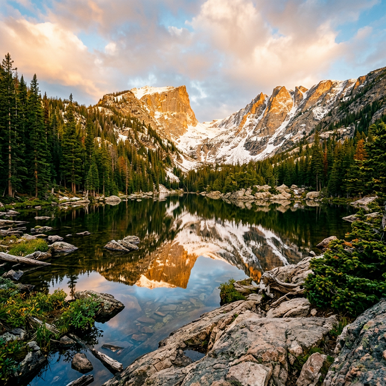
Dream Lake・落磯山國家公園
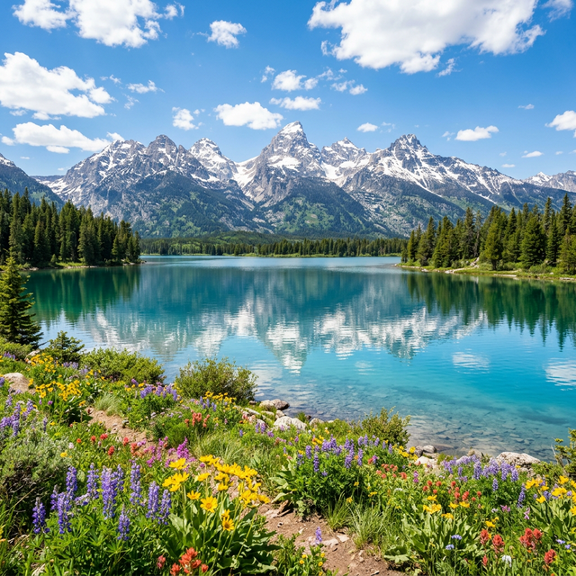
Jenny Lake・大提頓國家公園
橫跨懷俄明：魔鬼塔
🥾 Tower Trail（2km 環形｜爬升 +50m｜難度：易）
穿越無際的大平原，抵達全美首座國家紀念物 Devils Tower。環塔步道讓你從每個角度端詳這座 386 公尺高的火成岩柱，傍晚光線下岩壁紋理最為壯觀。草原犬鼠 (Prairie Dog)
群落是額外驚喜。
大提頓 NP：傑克森鎮與攝影
🥾 Phelps Lake Overlook（3km 來回｜爬升 +60m｜難度：易）
清晨前往 Mormon Row 經典攝點，拍攝古老穀倉背後大提頓群峰的日出剪影。下午輕鬆健行至 Phelps Lake 觀景台，俯瞰被壯麗山脈環抱的寧靜湖泊。黃昏造訪 Jackson
傑克森鎮著名的鹿角拱門廣場。
大提頓 NP：珍妮湖深入峽谷
🥾 Jenny Lake Boat + Hidden Falls → Inspiration Point → Cascade Canyon（15km 來回｜爬升
+370m｜難度：中）
搭乘交通船橫渡 Jenny Lake 西岸，先探訪 Hidden Falls 瀑布，再攀上 Inspiration Point 俯瞰整個湖面。續走深入 Cascade Canyon —
巨大的峽谷兩壁矗立雪峰，常能邂逅麋鹿 (Moose) 與黑熊。這是大提頓 CP 值最高的一日路線。
黃石 NP：地熱地景巡禮
🥾 Upper Geyser Basin Trail（5km 環形｜平坦｜難度：易）
從 Old Faithful 出發，沿木棧道巡遊 Morning Glory Pool、Grand Geyser、Riverside Geyser 等數十座間歇泉。
🥾 Fairy Falls + Grand Prismatic Overlook（8km 來回｜爬升 +30m｜難度：易）
下午前往 Grand Prismatic 鳥瞰步道，從高處俯視大稜鏡泉 — 直徑 113 公尺的幻彩溫泉。續走至 60 公尺高的 Fairy Falls 瀑布。
黃石 NP：大峽谷壯景
🥾 Uncle Tom's Trail（超陡 328 階鐵梯直達瀑布底部｜難度：中）
黃石大峽谷區的核心體驗。先走 South Rim Trail 沿峽谷邊緣前行，在 Artist Point 拍攝經典的黃石大瀑布 (Lower Falls, 94m) 照片。挑戰 Uncle
Tom's Trail 的 328 階鐵梯直下峽谷感受瀑布水氣。
🥾 Ribbon Lake Trail（10km 環形｜爬升 +200m｜難度：中）
傍晚沿峽谷北緣延伸至 Ribbon Lake，遠離人群，野花遍佈。
黃石 NP：拉馬爾谷與告別
🦬 清晨：Lamar Valley 野生動物觀察
黎明時分進入被稱為「美國塞倫蓋蒂」的拉馬爾谷。這是黃石觀賞野鰻 (Bison)、灰狼 (Wolf)、叉角羚 (Pronghorn) 的最佳地點。自備雙筒望遠鏡。
🥾 Mystic Falls Loop（5.6km 環形｜爬升 +150m｜難度：易-中）
下午前往 Biscuit Basin 出發的 Mystic Falls 步道，瀑布加上山頂的 360° 展望，為黃石之旅畫下完美句點。
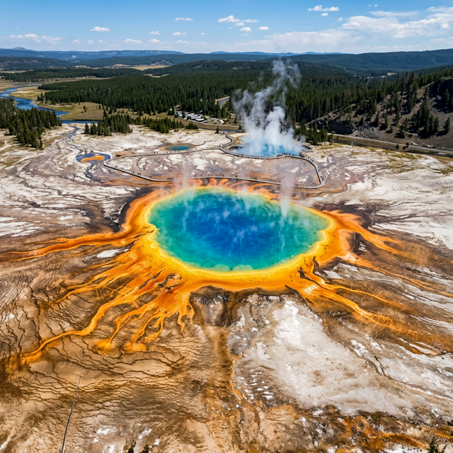
Grand Prismatic Spring・黃石國家公園
黃石 ➔ 傑斯伯：
冰原大道與藍寶石湖
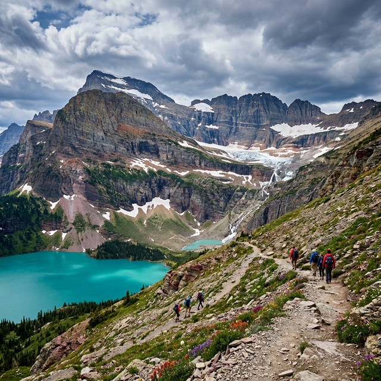
Grinnell Glacier Trail・冰河國家公園
蒙大拿：向北挺進
穿越蒙大拿州「Big Sky Country」的廣袤大草原。沿途壯闊的天空線令人震撼。傍晚抵達 Glacier NP 西入口 West Glacier。
Glacier NP：向陽大道與隱藏湖
🚗 Going-to-the-Sun Road —
全美最壯觀的景觀公路。
🥾 Hidden Lake Overlook（4.4km 來回｜爬升 +140m｜難度：易-中）從 Logan Pass 穿越高山草甸，常見
Mountain Goat 悠閒漫步。
🥾 Highline Trail 前段（至 Haystack Butte 折返，12km 來回｜爬升
+240m｜難度：中）沿大陸分水嶺的懸崖而行。
Glacier NP：冰河與冰山湖
🥾 Grinnell Glacier Trail（17.6km 來回｜爬升
+490m｜難度：中-難）王牌路線。從 Many Glacier Hotel 出發（可搭船縮短 3km），途經瀑布與碧綠湖泊，最終抵達公園內僅存的冰河之一。
替代：🥾
Iceberg Lake（15.4km 來回｜難度：中）即使盛夏也漂浮冰山碎塊的高山湖泊。
沃特頓湖 NP：跨越邊境
入境加拿大！
🥾 Bear's Hump Trail（2.8km 來回｜爬升
+225m｜難度：短-中）距離短但坡度陡。登頂後俯瞰百年 Prince of Wales Hotel、Upper Waterton Lake 與延伸至美國邊界的壯闊山谷。
班夫 NP：峽谷與小鎮
🥾 Johnston Canyon to Upper Falls（5.4km
來回｜爬升 +135m｜難度：易）沿懸掛在峽壁上的金屬步道深入峽谷。
🥾 Tunnel Mountain（4.3km 來回｜爬升 +260m｜難度：易-中）傍晚 360°
俯瞰班夫小鎮、Bow Valley。下山享受班夫鎮歐式度假氛圍。
班夫 NP：茶屋與蜂巢
🥾 Lake Agnes Tea House + Big Beehive（7km + 加碼 2km｜爬升 +400m + 120m｜難度：中）從露易絲湖出發，攀升至加拿大最高海拔的百年茶屋。加碼登上 Big Beehive 觀景台，俯瞰露易絲湖的全景碧綠之美。
班夫 NP：藍寶石湖泊之約
🥾 Moraine Lake Rockpile Trail（0.6km｜難度：易）—
清晨搭接駁車拍攝「加幣 20 元」的經典十峰谷倒影。
🥾 Larch Valley & Sentinel Pass（11.6km 來回｜爬升
+725m｜難度：中-難）深入落葉松谷，秋季金黃色落葉松群絕美。直上 Sentinel Pass (2,611m) 獲得 360° 震撼展望。
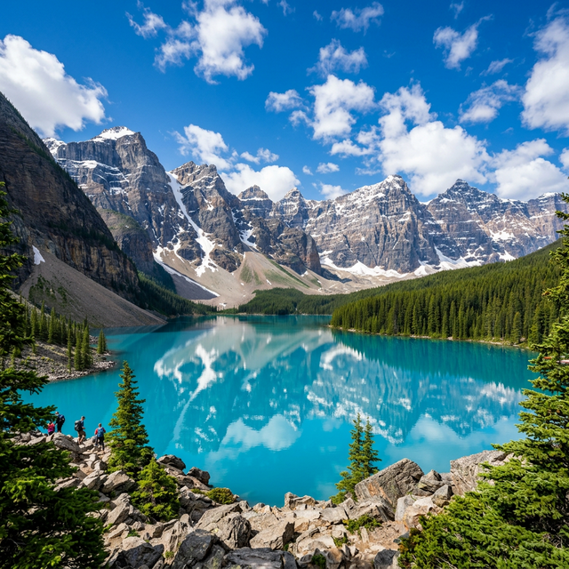
Moraine Lake・班夫國家公園
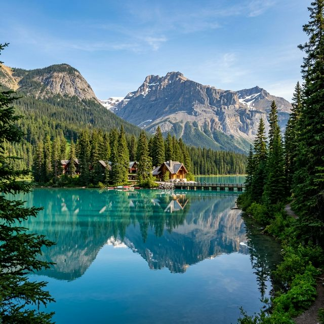
Emerald Lake・優鶴國家公園
Yoho NP：冰線步道挑戰
🥾 Iceline Trail（14.2km 環形｜爬升 +710m｜難度：難）
优鶴國家公園最具史詩感的健行路線。從 Takakkaw Falls 出發，攀升至冰河邊緣。你將走在巨大的冰河岩屑坡上，近距離感受冰河的壯闊，俯瞰整個 Yoho 山谷與對面的瀑布群。
Yoho NP：翡翠湖與高山瀑布
🥾 Emerald Lake Circuit（5.2km 平坦｜難度：易）沿著翡翠色湖泊漫步，欣賞 Mount Burgess 的倒影。
📷 Takakkaw Falls — 近距離感受 373 公尺高、加拿大第二高瀑布的震撼。下午可拜訪 Natural Bridge（天然橋）欣賞踢馬河（Kicking Horse River）切開岩石的奇景。
冰原大道：地表最美景觀公路
📷 Peyto Lake — 俯瞰狐狸形碧藍湖泊。
🥾 Parker
Ridge Trail（5km 來回｜爬升 +250m｜難度：中）登頂直接俯瞰 Saskatchewan Glacier，冰原大道上唯一能步行抵達的冰河全景。
🧊
哥倫比亞冰原 — 搭乘巨輪冰原雪車登上阿薩巴斯卡冰原，踏上萬年冰川。
Jasper NP：峽谷與五湖
🥾 Maligne Canyon 全程（3.7km
單程｜難度：易）六座天橋跨越深邃的石灰岩峽谷。
🥾 Valley of the Five Lakes（4.5km 環形｜難度：易）五座色彩各異的寶石湖泊 —
從翡翠綠到蒂芬妮藍。
Jasper NP：天使冰川與精靈島
🥾 Edith Cavell Meadows（8.5km 來回｜爬升
+400m｜難度：中-難）近距離觀賞 Angel Glacier 懸掛岩壁的壯觀景象，Cavell Pond 常漂浮亮藍色浮冰。
🚢 下午：Maligne Lake
精靈島 — 搭遊船前往 Spirit Island，親睹落磯山最夢幻的經典構圖。
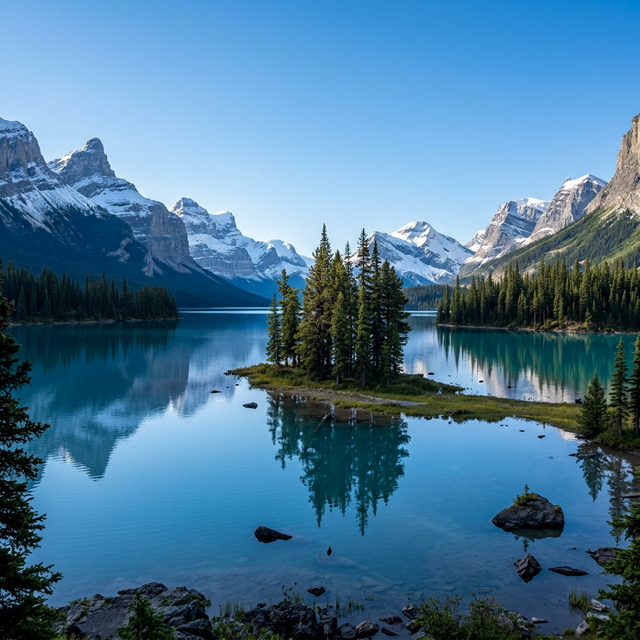
Spirit Island・傑斯伯國家公園
傑斯伯 ➔ 溫哥華：
森林之巔與海港漫步
羅布森山：落磯山之巔
🥾 Kinney Lake Trail（8.4km 來回｜爬升 +100m｜難度：易）瞻仰落磯山最高峰 Mt. Robson (3,954m)。穿越原始森林抵達 Kinney Lake — 如果天氣放晴，Mt Robson 的完整倒影會映入翡翠色的湖面。下午拜訪附近的天然溫泉。
長途公路：向海出發
今天是風景壯麗的長途駕駛日。從 Jasper 經 Kamloops 轉往惠斯勒，途中行駛絕美的 Duffy Lake Road — 蜿蜒的高山公路穿越火山地形與翡翠色湖泊。傍晚抵達 2010 冬奧主辦地惠斯勒。
惠斯勒：奧運山城探索
🚡 Peak 2 Peak Gondola —
搭乘全球最長的無支撐纜車橫越兩座山峰，360° 全景令人屏息。
🥾 Train Wreck Trail（5km
來回｜難度：易）穿越吊橋深入森林，探訪七節被色彩鮮豔塗鴉覆蓋的廢棄列車殘骸 — 森林×街頭藝術的奇幻組合。
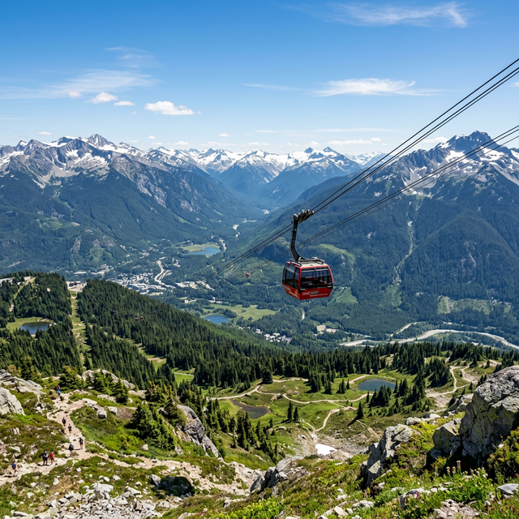
Peak 2 Peak Gondola・惠斯勒
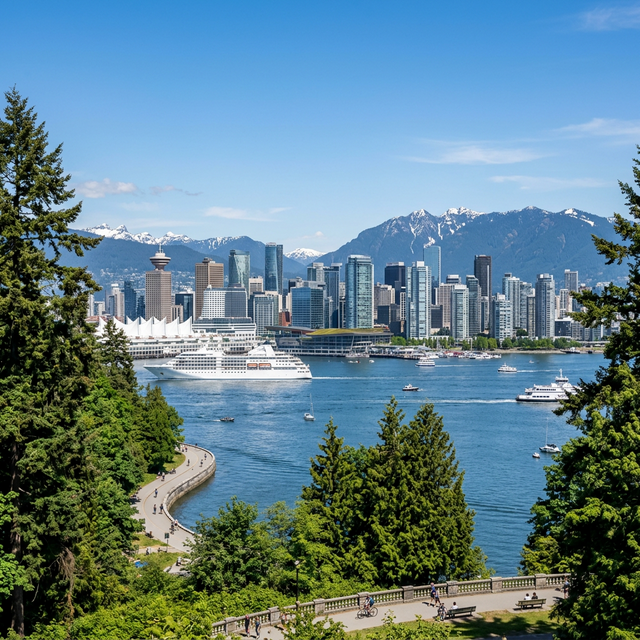
Stanley Park・溫哥華
海天公路：抵達溫哥華
🚗 Sea-to-Sky Highway — 加拿大最美公路之一。途經 Shannon Falls (335m 瀑布)、Sea to Summit Trail 纜車段（可選）。傍晚漫步溫哥華 Gastown，觀賞百年蒸汽鐘每 15 分鐘的噴氣錶演。
溫哥華：都市森林與美食
🚲 Stanley Park Seawall（10km 騎行）—
環繞北美最大的城市公園，一側是太平洋，一側是百年巨木。
🍽️ Granville Island Market — 享受最新鮮的加國海鮮。日落時分前往 English
Bay 欣賞太平洋夕陽。
溫哥華 ➔ 西雅圖：
翡翠之城的終曲
North Cascades NP：孔雀藍奇蹟
🥾 Maple Pass Loop（11.3km 環形｜爬升 +600m｜難度：中-難）
華州最佳秋景環線，360° 環繞 Lake Ann 的壯闊山景與金黃步道。或替代 Blue Lake Trail（7km 來回｜+330m｜中）。途中親睹 Diablo Lake
的孔雀藍奇蹟。
雷尼爾山 NP：天堂區
🥾 Skyline Trail Loop（8.8km｜爬升 +520m｜難度：中）
從 Paradise 出發，經 Myrtle Falls 瀑布攀至 Panorama Point，360° 俯瞰雷尼爾火山與周圍冰河。夏季野花遍佈，是華盛頓州最受歡迎的高山步道。
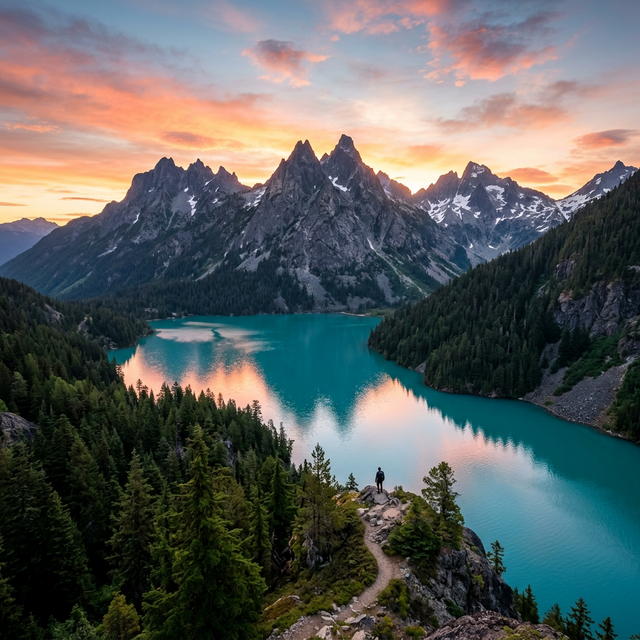
Diablo Lake・北喀斯喀特國家公園
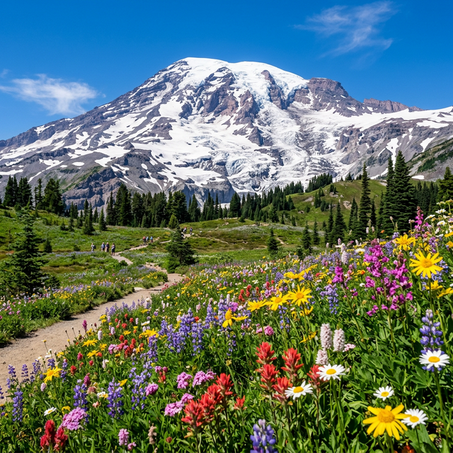
Mt Rainier・雷尼爾山國家公園
雷尼爾山 NP：日出區
🥾 Burroughs Mountain（12km 來回｜爬升 +370m｜難度：中-難）
近距離仰望 Emmons Glacier — 美國本土面積最大的冰河。高山苔原地帶常可見到 Marmot 與 Mountain Goat。
🥾 Mt Fremont Lookout（9km 來回｜爬升 +270m｜難度：中）
攀上防火瞭望塔，雷尼爾與群峰盡收眼底。
西雅圖：翡翠之城
太空針塔俯瞰城市天際線、Pike Place Market 的飛魚秀、Chihuly Garden and Glass 的玻璃藝術盛宴。帶著 30 天的滿滿回憶，前往西雅圖塔科馬機場 (SEA-TAC) 返家。
💡 2026 探險家攻略
01 通行證與時段預約
- 美國段： 預購 "America the Beautiful" 年票。
- 加拿大段： 必備 "Discovery Pass"。
- 核心預約： RMNP, 冰河, 雷尼爾山需提前 3-4 個月卡位。
02 租車與保險細則
- 勾選 Different Drop-off Location (丹佛領、西雅圖還)。
- 領取 Canada Non-Resident 跨境保險卡。
- 電子簽證 ESTA (美) 與 eTA (加) 務必備妥。